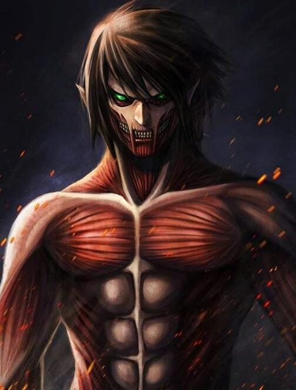

進擊的巨人
|
故事大綱 在故事開始前的一百年，巨大的類人生物「巨人」突然出現，毫無理由地消滅大半人類。殘餘的人類建造了三道同心圓高牆，最外圍的是瑪利亞之牆、中間是羅塞之牆、最內側是席納之牆，人類懷抱著搖搖欲墜的和平居住在牆內百年之久，許多人在牆內出生長大、不曾見過巨人。這一切在某一天起了變化，一個六十公尺的超大型巨人突襲並破壞了希干希納區（瑪利亞之牆外）的城門，而另一個全身覆有似鎧甲構造的盔甲巨人則打碎了瑪利亞之牆的城門，讓一大群巨人得以進入該區。人類被迫放棄了瑪利亞之牆和羅塞之牆間的土地，撤離到內部區域，導致人口變得密集，產生動亂和饑荒。 巨人是巨大的人型生物，身高通常在3至15公尺之間，他們的外觀看似成年人類，不過都沒有生殖器。他們似乎不需要食物，但會本能地捕吃人類，卻不會襲擊人類以外的生物。巨人沒有消化系統，他們吞掉人類後，體內的黏液會將之包裹為黏糊糊的球吐出。巨人的皮膚堅硬，能迅速再生，除了後頸這個唯一的弱點以外都難以造成永久傷害。 人類為了對抗巨人而招募了三支兵團：故事的核心放在調查兵團，他們會策馬出擊，對充滿巨人的牆外世界進行調查，試圖奪回土地。由於調查兵團的傷亡率極高，但卻又鮮能勘查到實質有用的情報，所以經常受到民眾的無情嘲諷；第二支是人數最多的駐紮兵團，他們守衛牆內人民的和平；第三支部隊是憲兵團，他們負責守衛王室，由於工作相對輕鬆及安全性較高，導致了腐敗和許多政治弊病。士兵使用立體機動裝置作為武器，這是一個綁在腰間的多功能裝置，能發射鉤繩以便在樹木、屋頂和牆壁間移動，兩側有鞘放置雙刀，主要用於割下巨人後頸致命部位。 牆內的政治實權在王政府身上，國王是沒有實權的傀儡，亦存在類似國會的立法機關；而總統則是三個兵團的統帥，代表軍方。但是王政府官員和議員都存在腐敗問題，同時在議會上亦有部份派別議員反對繼續提供資源給調查兵團進行壁外調查。隨著故事的進展，傀儡國王以及王政府被推翻，但是實際權力仍在總統和三大軍團手上。 |
| 巨人到底從何而來？ |
|
巨人介紹
始祖巨人-艾倫-耶格爾超大型巨人-貝特霍爾德-胡佛(現為阿明-阿諾德) |